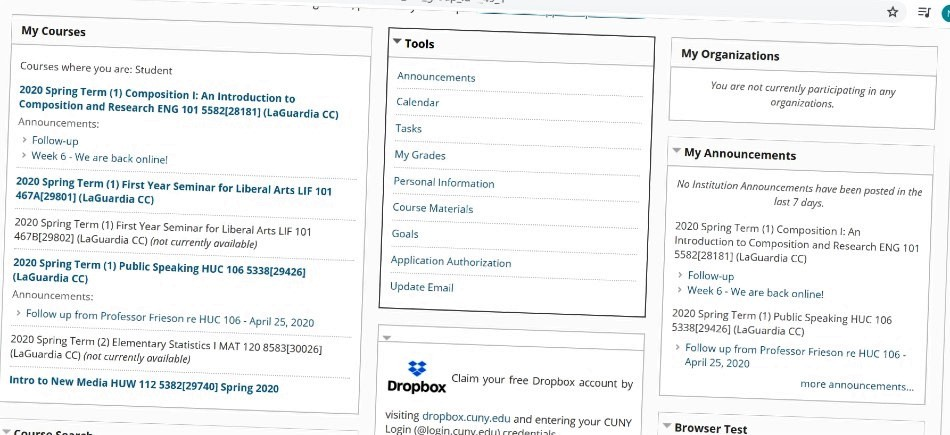

The last day I went to the city,it was pouring heavily. I enjoyed the weather and was making plans with my friends for the weekend.Little did I know that we were going to be quarantined.

I went to the park near my home many times for a walk. I was very shocked to see the playing ground empty. There was a strange silence all around. I was missing the children who played mercifully in the park.

Everything is shut down due to the Covid-19. When I want to stroll around 99 cents store for a stroll, I saw this message.

The last time I went for a walk.
I decided to get over the gloominess and make effective use of this quarantine in learning new skills.

I learnt cooking from my mom. After spending many days in the kitchen, I finally learnt to make noodles. This is the first dish that I made without anybody's help.

I completed the whole series of my favorite show on Netflix 'Money Heist'. Part 4 is my favourite.

Me and my family celebrated my father's birthday in the quarantine.Though we felt like going to the city,but we had a great time.

Most of the time I see and hear bird's sounds from my window. Sometimes I wonder if the animals think 'Where are these humans?'
Everyday, I check my cunifirst to be updated on my homeworks and grades.

We ordered a good quantity of food and essentials from the grocery.

My baby brother Veer is very naughty and spending time with him is very valuable to me. We expermineted a haircut on him at our home.It was priceless to see him setting his hair infront of the mirror.

Initially I felt very anxious but then I realized that we should go with the flow and hope for the things to be better soon.It isn't easy for everybody to be stuck inside but we can make use of this time in building great relationships with family and learning new skills.